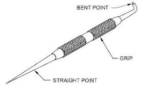

A. Scriber and Surface Gauge
It consists of a cast iron base on the center of which a steel rod is fixed vertically. The scriber is made up of high carbon steel and is hardened from the front edge. It is used for locating the centers of round bars or for marking lines.